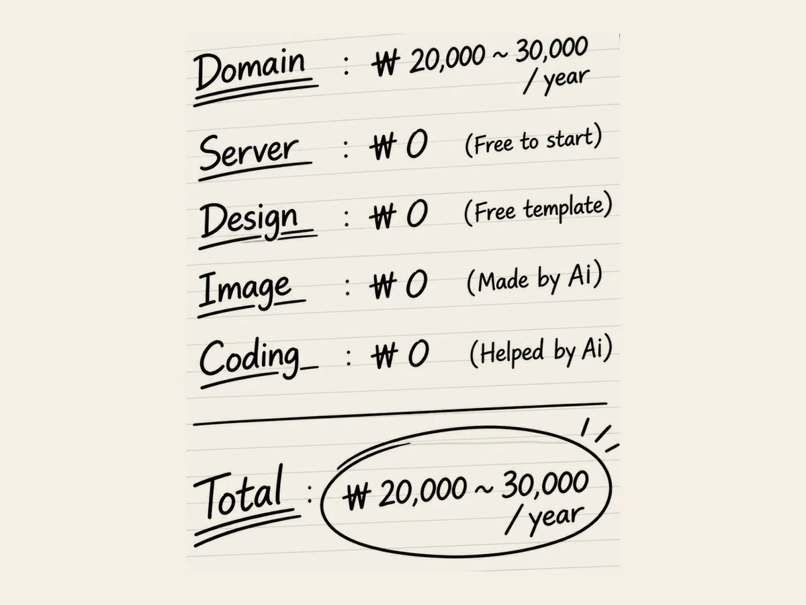

3.
Ça coûte combien ?
Il fallait que je pose une question un peu plus concrète.
L’argent.
Même avec une IA, j’étais bizarrement gêné de parler d’argent.
J’y ai pensé un instant, puis j’ai souri.
« Après tout, ce n’est qu’une IA. »
« Bon. Ça coûte combien de créer un site web ? »
Je m’étais quand même préparé à ce que ça coûte une certaine somme.
Créer un site web, utiliser un serveur, acheter un nom de domaine, s’occuper du design...
Ça devait quand même coûter assez cher.
L’IA a commencé à énumérer les différents coûts.
« Il faut payer l’enregistrement du nom de domaine.
En général, ça coûte entre 20 et 30 dollars par an. »
« D’accord. Et ensuite ? »
« Pour le serveur, vous pouvez commencer gratuitement. »
« Gratuitement ? »
« Oui. À votre échelle actuelle, l’offre gratuite est largement suffisante. »
Il y avait quelque chose de bizarre.
« Et le design ? »
« Vous pouvez utiliser un modèle gratuit ou le faire vous-même. »
« Et le code ? »
« Je peux vous aider. »
Attends.
« Alors, au total, ça coûte combien ? »
« À ce stade, il n’y a pratiquement que le coût du nom de domaine. »
« Combien ? »
« Environ 20 à 30 dollars par an. »
J’ai regardé l’écran un long moment.
« Quoi ? »
Je pensais que créer un site web coûtait très cher.
Mais 20 ou 30 dollars ?
Quelques années plus tôt, j’avais entendu parler de sites web dont la création avait coûté des dizaines de milliers de dollars.
À ce prix-là, pourquoi ne pas essayer ?
